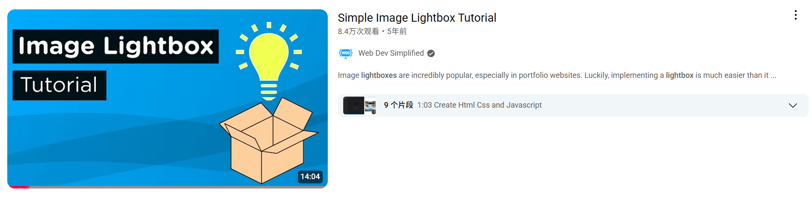
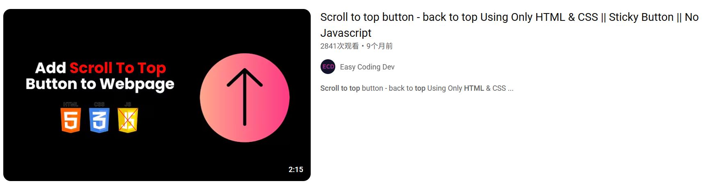
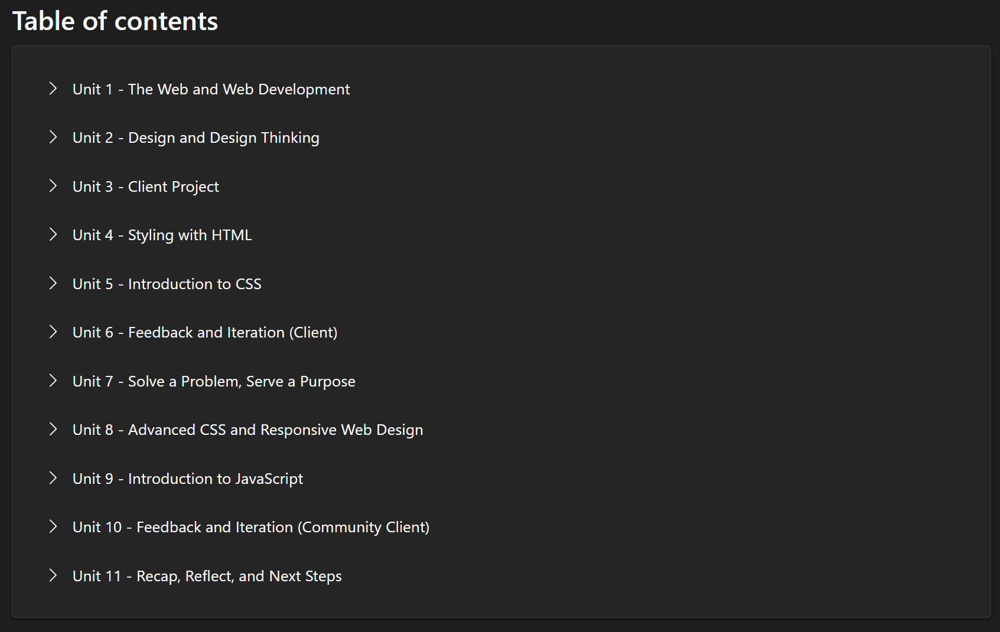
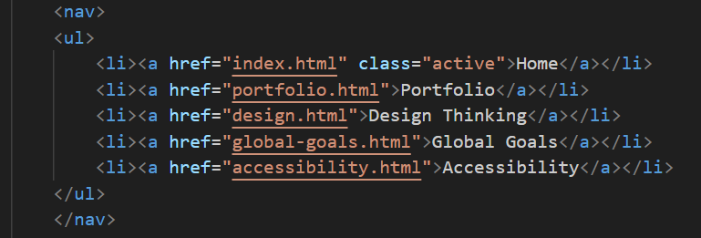

How I Applied Design Thinking
I followed the design thinking process while building this website. First, I empathized with future users by considering what makes a site easy to use and visually clear. I then defined the key goals: accessibility, visual balance, and responsiveness across devices.
Next, I ideated by sketching layout ideas and choosing a blue-orange color palette that’s both modern and readable. I prototyped the design using HTML and CSS, and later tested on different screens and with peers to fix layout bugs, navigation flow, and hover behavior. The final site is clean, futuristic, and user-friendly.
Behind the Curtain
🧩 Challenges I Faced
I ran into a ton of challenges building this site — like seriously, *a lot*. Figuring out how to make images zoom with Lightbox? Not as easy as I thought. Making sure all the images looked clean and the same size? That took forever. My CSS file got way too long, so I had to wrestle it into shape. And the “scroll to top” button? Took some trial, error, and more error. But in the end, every bug and mess taught me something new — and that’s what made it fun.
A tutorial about lightbox: Watch on YouTube
A tutorial about PageUp Button: Watch on YouTube
🛠️ Using Developer Tools
I frequently went to Microsoft Web Development Course by Mary Kiang and Atiyah Conry to inspect HTML structure, test CSS changes live, and debug layout issues. It helped me adjust element positioning and fix responsive design bugs.
📚 What I Learned
This project taught me how different elements work together—how HTML provides structure, CSS controls style, and JavaScript adds interactivity. I also learned how to make my site responsive and accessible for everyone.
💡 A Look at the Code
Here's a peek at part of my code for the navigation bar and responsive layout:
Overall, building this site has improved my confidence in writing clean, organized code while also thinking about user experience and accessibility.